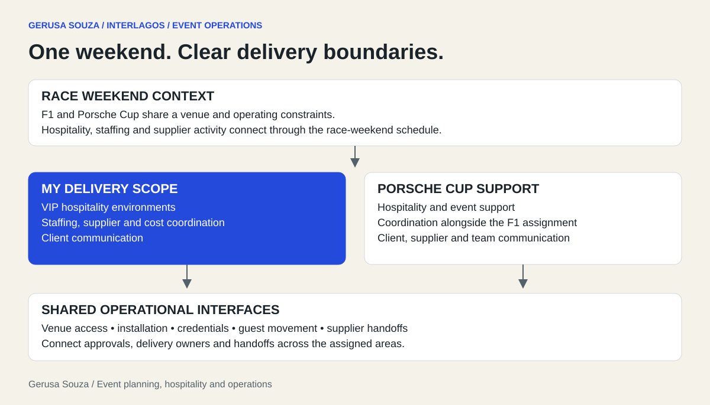
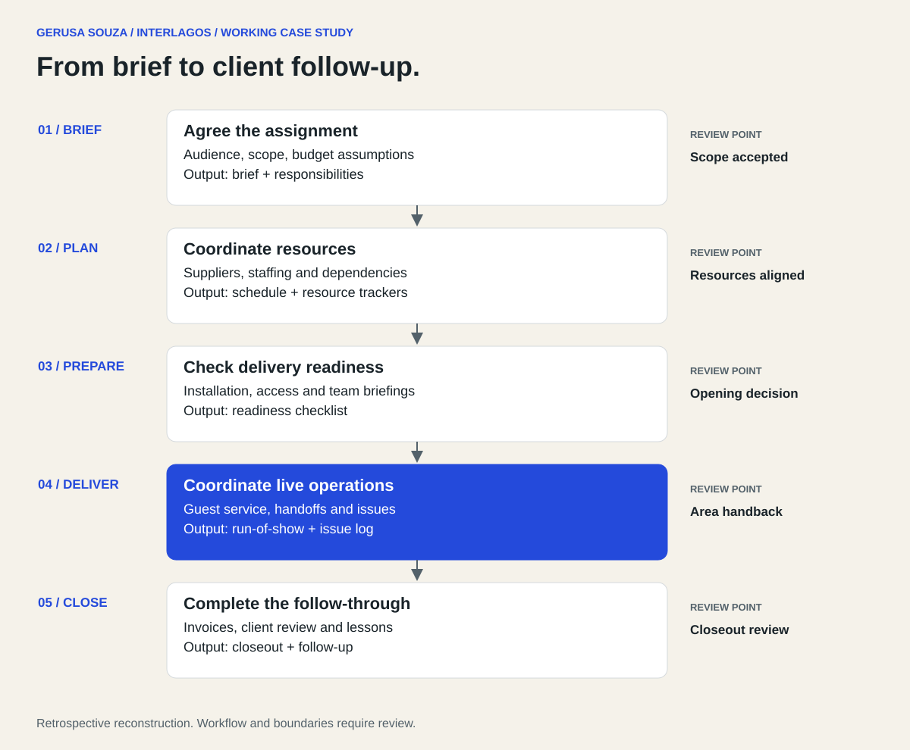
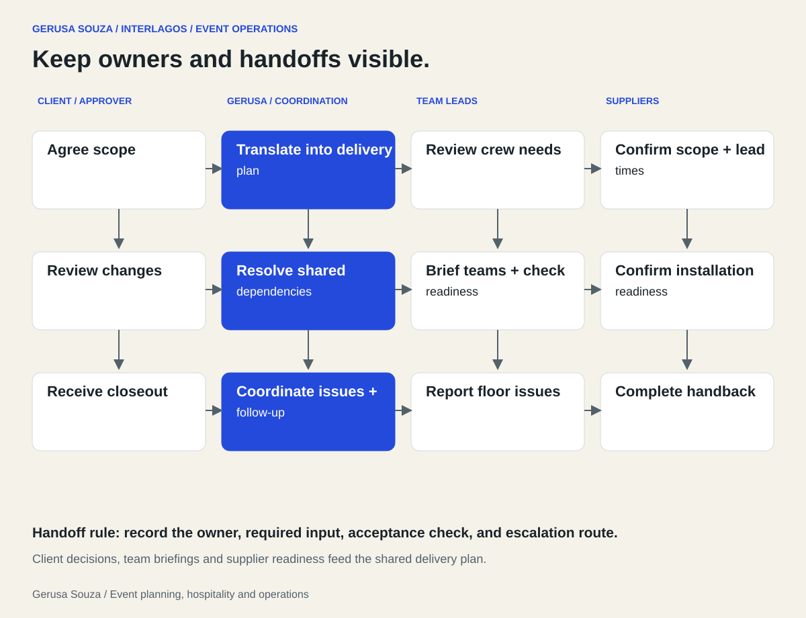

Client expectations
Translate the assigned hospitality brief into responsibilities and coordinated delivery.
SÃO PAULO / MOTORSPORT HOSPITALITY
Interlagos VIP hospitality and event operations. A visual walkthrough of my reported planning, supplier coordination, staffing and client-management work, with related Porsche Cup support.
Working draft / Retrospective reconstructionTHE ASSIGNMENT
Translate the assigned hospitality brief into responsibilities and coordinated delivery.
Align supplier activity, staffing and venue interfaces around the guest experience.
Make handoffs, readiness checks and escalation routes visible.
Portfolio-reported scope includes hospitality operations, supplier coordination, account management and client communication. Exact editions and authority boundaries await review.



DELIVERY TOOLKIT
Reconstructed and demonstration documents explain the approach. They are not original event records.
The portfolio reports repeated F1 VIP work and a related Porsche Cup engagement. Final wording depends on confirmation of the editions and relationship sequence. Staffing totals and delivery-window figures are excluded pending review.